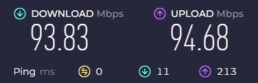

Всего же в списке кандидатов на блокировку из-за отказа регистрироваться в реестре надзорного ведомства восемь зарубежных хостинг-провайдеров.
 «Это может грозить тем, что множество мобильных приложений и сайтов перестанут работать», — считает один из IT-специалистов «Роскомсвободы». Он также полагает, что «мы наблюдаем новый этап российской онлайн-цензуры — блокировка целыми хостингами. Что-то подобное уже по мелочи было, но это самый „крупняк“».
«Это может грозить тем, что множество мобильных приложений и сайтов перестанут работать», — считает один из IT-специалистов «Роскомсвободы». Он также полагает, что «мы наблюдаем новый этап российской онлайн-цензуры — блокировка целыми хостингами. Что-то подобное уже по мелочи было, но это самый „крупняк“».
 «Это „туркменский вариант“, с тотальной блокировкой всего», — Илья Вайцман. По его словам, проблема может стать очень серьёзной, поскольку на этих площадках «крутятся не только сайты практически всего, но и заметная часть сервисов VPN». Как итог, даже в лучшем случае работать всё будет хуже и медленнее.
«Это „туркменский вариант“, с тотальной блокировкой всего», — Илья Вайцман. По его словам, проблема может стать очень серьёзной, поскольку на этих площадках «крутятся не только сайты практически всего, но и заметная часть сервисов VPN». Как итог, даже в лучшем случае работать всё будет хуже и медленнее.
 В то же время один из технических специалистов «Роскомсвободы» считает, что пока слишком мало данных о намерениях РКН, поэтому строить точные прогнозы невозможно. При этом он напомнил, что в прошлый инцидент с Amazon «легло пол-интернета», и куча IoT-ресурсов.
В то же время один из технических специалистов «Роскомсвободы» считает, что пока слишком мало данных о намерениях РКН, поэтому строить точные прогнозы невозможно. При этом он напомнил, что в прошлый инцидент с Amazon «легло пол-интернета», и куча IoT-ресурсов.
Через амазон крутится много чего, это хостинг доставки, то есть если заблокировать то пол нэта сразу ляжет, почти все онлайн игры, та многое чего
<конспирологический оффтопик потёрт модератором>
В ограниченном порядке зарубежных хостинг-провайдеров уже блокируют, смотрите темы
Снова “эксперты” выражают свое “мнение”. Которое снова похоже на плач всепропальщиков.
Прежде чем высказываться, нужно посмотреть все факты.
- РКН не блокирует критически значимые ресурсы. Там работают не идиоты, хоть и принимают нелогичные решения.
- Если полистать списки блокировок, то станет ясно, блокировкам подверглись ресурсы, не имеющие никакой стратегической важности. РКН плевать на ваши игрульки или анямэ. А вот Ютуб - вещь крайне неоднозначная, поэтому закрывать его опасно, при попытках в августе начались ощутимые убытки в сфере связи.
- ВПН в основном блокируется по сервисам, не по технологиям. Потому что пункт первый.
- Туркменистаном вообще не пахнет, люди снова забывают о географии российской сети. В любой децентрализованной системе с более чем одной точкой входа сложность её контроля всегда зависит от степени ветвления узлов.
Но “эксперты” всегда какие-то однобокие, всегда смотрят только в одну сторону…
Угу кто-то не знает, о дотациях. Вон ruTube убыточен, но за чей-то счет (все мы знаем) до сих пор жив. О каких убыткам может идти речь если все только перепрыгнули с кабеля на мобильный, а там траффик лимитированный если речь идет о раздаче.
роскомнацисты сами ничего не решают, им спускает с верху указания сами знаете кто. и да, технологии заблоканы, например, тот же openvpn, wg, ss
Решают. Недавно вышел закон. Теперь они сами могут все подряд банить без объяснения причин.
Опенвпн у меня работает отлично. Остальными не пользуюсь.
В том то и дело, что основной доход провайдеров идет через кабельные системы, мобильный интернет в среднем дешевле. Там формула простая - больше трафика - больше денег.
Сайт AWS на моем провайдере к слову заблокирован
А что, Cloudflare и AWS не критически важны? Они вообще-то одни из самых крупных игроков на рынке CDN. AWS самый крупный облачный провайдер в мире. Остальные - тоже Американский биг тех. Которые контролируют большую часть интренета. Если их все по автономным системам перебанят то обходу блокировок бесплатному хана будет. А это - Туркменский вариант
ей богу вы какую фигню несете
У меня unlimited тариф на симке стоит 740р
Чисто проводной 500р без плюшек и IP за 100Мбит
Где он дешевле?!!
а может у него нет проводного нэта, висит только на мобильном, поэтому и рассуждения такие )
есть те кто топит за телефоны, есть те кто за компы, за компы обычно люди которые со времён вин 98, те кто в телефонах, им этого не понять что это ) для них это реальность которую никогда не видели и никогда не поймут
К тому оборудования для вышек т.е сотовой связи дороже стоит.
Снова однобокий взгляд.
Мобильный интернет откуда берется? Правильно - по кабелю на ретранслятор. Так вот путь до ретранслятора это кабельная сеть, которая стоит куда дороже работы беспроводной сети ретранслятора. По сути, мобильный интернет всего лишь последний, самый короткий и дешёвый участок сети. Поэтому мобильный интернет в совокупном доходе провайдера занимает малую часть.
А то что для клиента он выглядит дороже, так оно и есть, потому что для провайдера нужно как-то зарабатывать, помимо расходов на амортизацию оборудования.
ЗЫ. Оборудование вышек связи относится к “кабельному” сегменту.
Клаудфлайр не важен. В россетях его доля минимальна, стратегически никак на работу Рунета не влияет. Поэтому пофиг.
Ну а нужные облачные серваки банить полноценно не будут, так как их собственная инфраструктура отлетит. Я об этом уже писал.
Останется только дождаться, когда собственную инфраструктуру заместят, чем давно занимаются. Ну или пытаются
По мне так очень смелое заявление о неважности cloudflare. Можно ли какую-то статистику?
Да это засланный человек, по его речам видно , по его словам у нас вообще все збс , и экономика оказывается растет 
 сто проц засланный , че вы его слушаете
сто проц засланный , че вы его слушаете
Оффтоп
Вообще растет. Статьи зарубежных агрегаторов смотри, если нашим не веришь.
Или они там за бугром тоже засланные агенты? 


Я четко написал - в России.
До блокировок было что-то около 40% российских ресурсов. Много, да. Теперь их минимум вдвое меньше. Переход на российские cdn прошел безболезненно, туда свалил почти весь финсектор, даже игровые порталы, критических сбоев не замечено. Поэтому простой вывод - клаудфлайр не важен для российских сетей, имеются неплохие аналоги.
Ну а в мире, да, этот провайдер весьма востребован.
это те российские сети, которые еле-еле ворочаются по вечерам?)
Да да да , ты хороший стендапер
Ну не знаю, тебе виднее. 
У меня всё работает. Не думаю что мне повезло с локацией, скорее я просто не шарюсь по тем сайтам, которые еле ворочаются по вечерам.
достаточно зайти в любой паблик провайдера вечером, того же ртк
я несколько месяцев решал вопрос с провайдером из-за нехватки ширины канала вечером, по итогу мне какой то псевдо-статический адрес дали, на котором проблему решили после того как я их задолбал
Странно, но у меня, как я писал, те же самые сети ртк (только под другим названием, дочерняя компания), и для юрлица, и для физлица каналы, и ЕСПД даже есть. Всё работает как часы, ничего не отваливается, по сайтам гуляет шустро. У меня сто мегабит, больше мне не нужно, хоть утром, хоть вечером долбится в потолок.

рекомендую проверять на том же селектеле, чтобы увидеть связность маршрута. особенно пинг
https://speedtest.selectel.ru/
До селектела вообще грустно.
{kind=link}
Пинг высокий, сервера далеко.
теперь сравни ради интереса скорость скачивания и пинг утром.
В случае например онлайн игр я вижу прямую зависимость с тестом
Да, надо будет затестить утром.
Единственная игра, в которую я поигрываю, хостится в сшп и пинг туда стабильно 150. Пробовал через впн прокинуть, искал оптимальные маршруты, оказывается, их нет, у меня кратчайший.
А каких-то 15 лет назад я в эту же игру заходил на те сервера, пинг был выше 200 с потерей в 30%.
Извините, но вы вешаете лапшу на уши людям, и ведь кто-то поверит.
И что? Какой из этого следует вывод? Обсуждение буквально о том, что если заблокировать все, кроме ресурсов стратегической важности, то у людей не останется доступа в нормальный интернет. Что вы людям голову морочите?
И что вообще такое “стратегически значимые ресурсы”, находящиеся за пределами РФ, особенно спустя несколько лет добровольно-принудительного перехода сотен сервисов и компаний на российскую инфраструктуру? Для стратегически значимых ресурсов за рубежом у РКН свой список, в который компания или организация из Очередного Стратегически Важного Реестра может добавить айпишники для openvpn или что они там держат за границей. Это даже не догадка, это просто факт: РКН, Минцифры, ЦБ и прочие структуры неоднократно публиковали письма на эту тему. Последнее было вот буквально на днях, когда банкам дали зеленый коридор на время учений в кавказских регионах.
Только он закрыт. Я не знаю, что там у кого работает, но конкретно в моем городе с миллионным населением он не работает примерно ни у кого, в том числе через мобильную сеть. Абсолютно все провайдеры позволяют загрузить в лучшем случае главную страницу с превьюшками, и больше ничего. Для тех жителей города, кто не пользуется средствами обхода блокировок, Youtube больше не существует - точка.
Вопросов нет, в регионах бывает всякое - в конце концов, Google по-прежнему показывает наличие российского трафика. Также он показывает, что этот трафик драматически просел.
Это просто неправда. OpenVPN, Wireguard и Shadowsocks на внешку не работают у большинства пользователей, и вы это прекрасно знаете, и километровые обсуждения этого факта можно найти в том числе на этом форуме, не отходя от кассы. И почему-то барыги странным образом перешли с торговли wireguard на торговлю vless - даже не знаю, почему.
А у меня был знакомый, который беспробудно пьянствовал, выкуривал две пачки в день и дожил до 100 лет. Дальше-то что, ну работает у вас, поздравляю.
А я в очередной раз замечу, что география сети не имеет никакого значения, если ТСПУ стоит на уровне провайдера. Вашему соседу абсолютно без разницы, что на роутере в вашей квартире заблокировано все, кроме 127.0.0.1, потому что он не пользуется вашим роутером для выхода в Интернет.
Вы противоречите сами себе буквально в каждом сообщении. То у вас не блокируют ничего важного, то вдруг Cloudflare перестал быть критически важным - да с какого перепугу? Что вообще может быть критически важнее Cloiudflare, Amazon, Digital Ocean и других гигантов, которые являются выбором по умолчанию в большинстве стран? Youtube у вас закрывать опасно, но при этом он закрыт, а продажи VPN и загрузки спуферов DPI побили все рекорды. Прекратите вводить людей в заблуждение, это как минимум непорядочно.
Прочитал, приуныл.
Поверхностные у вас представления о положении дел. Большинство ваших выводов основаны на каких-то слухах и домыслах.
А что есть нормальный интернет? У каждого понятия разные, у порядочной доли населения он ограничивается дноклассниками и алисой. Конечных физлиц, которым позарез нужен зарубежный трафик, в стране едва каждый пятый - это мало. Так что чисто субьективщина.
Иногда моим собеседникам так не хватает технического образования.
Я уже не раз объяснял, почему так получается. Совершенно неважно, на каком уровне стоят коробки. Речь шла о “потенциальном туркменистане”. Следите за мыслью.
Еще раз - клаудфлайр не важен для рунета, всё и без него работает стабильно. У нас имеются свои сидиэны. Если важен конкретно для вас - это ваши проблемы.
Вижу, что почти все мои посты вырваны кусками из контекста, для того, чтобы написать очередную “возмущенную” простыню. У меня нигде нет противоречий, просто нужно уметь читать посты.
А я не знаю, зачем вы подменяете тезис, который обсуждается изначально. Я напомню, что мы находимся на форуме об обходе цензурных ограничений, и обсуждаем связанные с этим вопросы. Что там у порядочной доли населения - без разницы, но вот вам факт: 79% россиян используют Whatsapp, и 72% россиян используют Telegram (данные Mediascope). Однако повторюсь, все эти проценты вообще не важны в контексте обсуждения, и я не вижу смысла на это съезжать.
Если у вас через страну гуляет международный трафик, а на уровне провайдеров заблокировано все подряд - это потенциальный туркменистан. Дальнейшие рассуждения о коррупции и добрых самаритянах снова подменяют основной тезис.
Еще раз - ничего за пределами рунета не важно для рунета. Что это дает людям, которых не устраивает загон рунета и которые в этой ветке ни о чем другом и не писали, лично я так и не понял, но вы снова подменили изначальный тезис.
Вступать в спор с местными сексотами — сомнительное удовольствие. Можно просто игнорировать бесполезные комментарии.
Стратегически можно вообще интернет выключить и сделать интранет как в Северной Корее
Цензуру в странах типа Китая обходят полагаясь на то, что цена блокировки того или иного иностраного ресурса выше чем дать возможность пользователям его эксплуатировать. Поэтому в Китае cloudflare не заблокирован